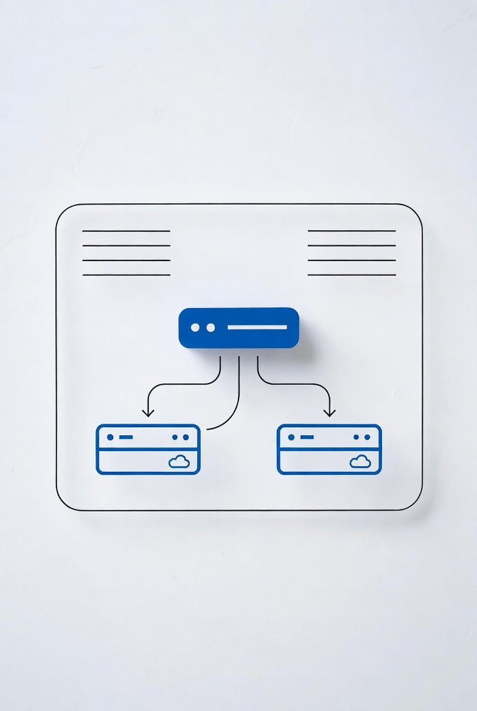
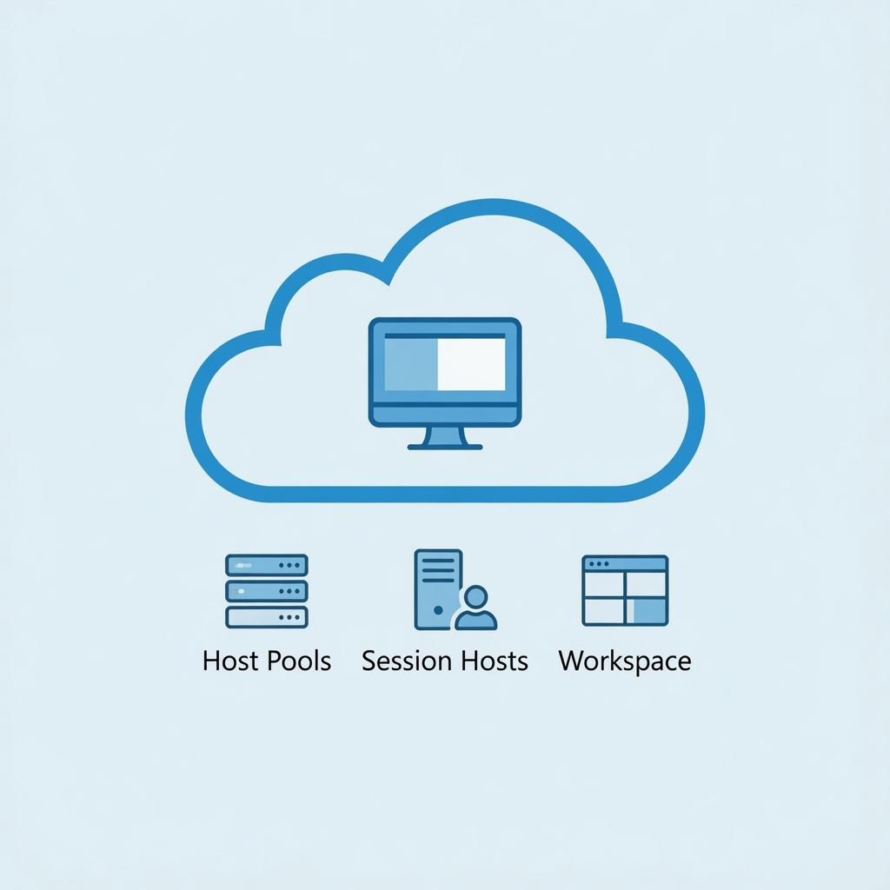

How to Set Up an Internal Load Balancer in Azure (Step-by-Step)
Step-by-step guide to Azure Internal Load Balancer. Configure backend pools, health probes, NAT rules for RDP/SSH, and load balancing rules.
Read More →Azure, Entra ID, Windows administration, and Microsoft ecosystem guides.
0 articles
Preparing for an Azure exam? Get our study guides with practice questions, labs, and exam tips.

Step-by-step guide to Azure Internal Load Balancer. Configure backend pools, health probes, NAT rules for RDP/SSH, and load balancing rules.
Read More →Learn how to configure Azure Network Security Groups with practical rules for web servers and database subnets.
Read More →Configure Azure P2S VPN with certificate-based or Azure AD authentication. Client setup for Windows, Linux, and macOS.
Read More →Learn to design and implement private access to Azure services using Private Link, private endpoints, and service endpoints with AZ CLI.
Read More →Learn to implement Azure AD Conditional Access policies for Zero Trust. Covers MFA requirements, blocking legacy auth, named locations, and authentication context.
Read More →Deploy a secure Ubuntu VM with NSG rules, SSH key authentication, and Fail2Ban hardening.
Read More →Test your Azure fundamentals knowledge with 10 free practice questions covering Cloud Concepts, Azure Architecture & Services, and Management & Governance. Interactive quiz with detailed explanations.
Read More →Learn the differences between Microsoft Entra External ID and B2B Collaboration. Understand guest access, customer identity management (CIAM), workforce vs external tenants, and when to use each solution.
Read More →
Comprehensive guide to the SC-900 exam covering all four domains: security concepts, identity & access, security solutions, and compliance solutions. Includes exam objectives, scenarios, and 5+ sample questions with explanations.
Read More →
Step-by-step guide to resetting AD user passwords, unlocking accounts, and automating password management with PowerShell.
Read More →
Deep dive into AVD components including host pools, session hosts, FSLogix, and management tools.
Read More →Fix Windows VPN issues fast with PowerShell. Solve DNS problems, WAN Miniport errors, adapter corruption, and connection failures with proven troubleshooting commands.
Read More →
Complete CMD to PowerShell guide with real command mappings. Learn why sysadmins must switch and how to transition.
Read More →
Compare Event Viewer and PowerShell logging for Windows administration. Learn when to use each tool for effective system monitoring.
Read More →